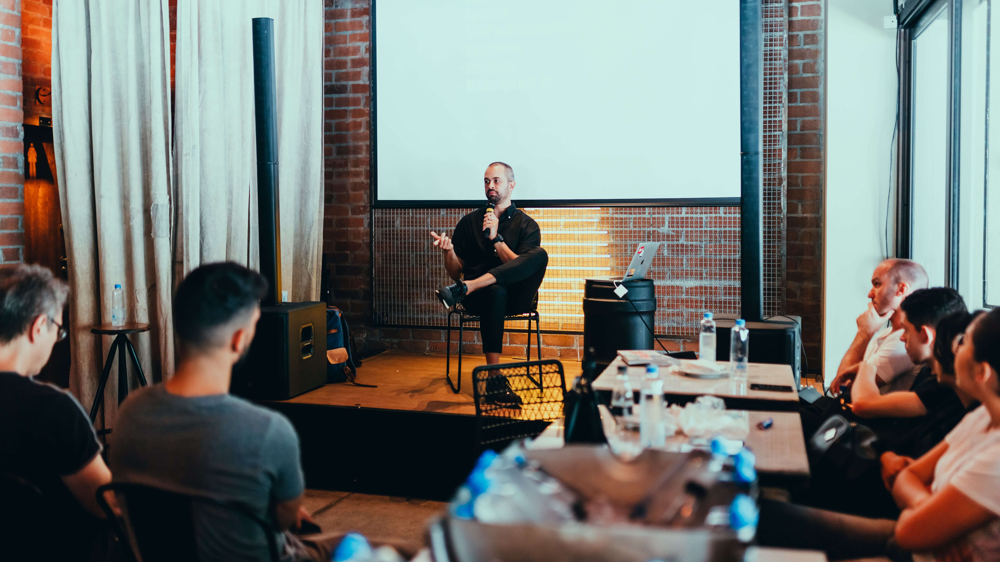

Annual Technology and Innovation Expo
An event highlighting innovative research and technology projects
from within the institution. Researchers, engineers, and students
showcase their inventions, prototypes, and technological
breakthroughs, providing a platform for collaboration and
knowledge exchange.

Climate Change Impact on Ecosystems
University researchers investigate the effects of climate change
on local and global ecosystems. This research may involve studying
changes in temperature, weather patterns, and biodiversity, as
well as assessing the impact on plant and animal species.

Research Symposium
OsloMet often hosts different types of research symposium, where
students showcase their scientific research projects and findings.
This can involve presentations, poster sessions, and discussions
about various scientific topics. These events provide a platform
for students to share their academic work, foster intellectual
discussions, and encourage an interest in research and innovation.

Artificial Intelligence and Innovation
AI is used in creative fields, including art, music, and content
generation, to enhance creativity and produce novel works.